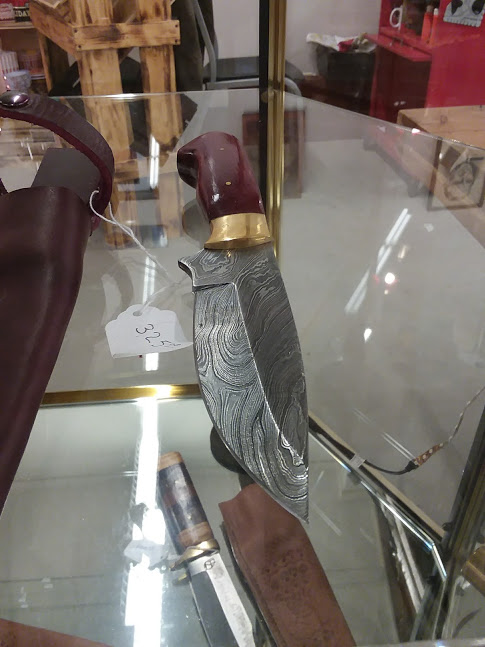
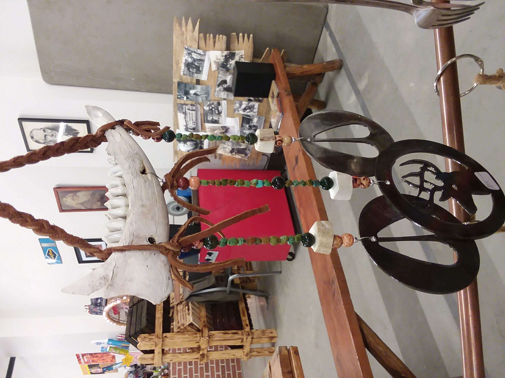

Sitting on my rarely used record player, next to the wax melter, the stack of spent tea lights, and the makeshift ramekin ashtray, is a wire tree bound to a rock. Closer inspection reveals a story of focus and dedication. Each branch is twisted together with love and care from three long wires; one black, one mint, and one dark blue. Its roots are woven together around a rock, like scraggly little pine tree clinging to the edge of a cliff. The person who made this did so with the utmost care and focus, driven forward by the single minded determination of an artist possessed by their work. She sells them for $5-6 at the Harrison City Market in Harrison, MI.
The complex reality of small town life
Harrison, in my mind, is a bundle of contradictions. This small town is located deep in the heart of what's lovingly referred to as “Trump country.” This particular condemnation of my hometown is not inaccurate. In the 2016 presidential election, 63.6% of Clare county voters voted for Trump. But at the same time, when I was a high school girl in this town, I could walk down the road holding hands with my girlfriend and nobody batted an eye. This is the town where a man in a confederate flag t-shirt told me that my African American boyfriend and I were a cute couple. Earlier that day, we’d discovered that you can’t buy donuts in the neighboring city of Clare without having racial slurs yelled at you from a pickup truck. There seems to be a church on every corner, but a strong Wiccan/neopagan movement growing underground. It’s a deeply conservative community, but everybody knows everybody. As a result, people have generally been very accepting in my experience. When you interact with the same people day after day, year after year, you learn to get past your differences. I have friends from back home whose political ideologies I find morally reprehensible. At the same time, I understand where their anger comes from.
There is a deep sense of bitterness about the place. According to the US census, in 2016 the national poverty rate was 12.7 percent. In Clare county, it was 21.7%. With poverty comes shame. We've all grown up on the myth of the American dream, and when a person fails to "pull themselves up by the bootstraps", it is treated as a moral failing. They say necessity is the mother of invention, and the people of Harrison are inventive. Driving down any dirt road, you may find handmade fences woven together from sticks, old cars being stripped down for parts, and many a well tended vegetable garden. In the absence of well paying jobs or opportunities, many have turned to making crafts to supplement their income. Every year, local artwork is put on display during the Harrison Street Fair and the Clare County Fair in the summer, and at the Frostbite Festival each winter. A recent year-round addition to the town is the Harrison City Market. This is where my sister got me the little wire tree mentioned earlier, and it’s where she brought me last Christmas during my semiannual visit home.
Art is worth more than its market value
Before I left for university, it had been an abandoned building next to the library. Now it was a farmer’s market for handmade birdhouses, crocheted baby blankets, essential oils, specialty popcorn, and wind chimes made from old silverware and deer bones. Right across from the blacksmith’s stand, with it’s handcrafted knives tucked safely behind glass, I met the artist—a quiet teenage girl in a faded NRA jacket.
 At the time, I didn’t think much about meeting her. As a healthy 22-year-old with no younger siblings, I generally don’t care about teenagers. But there was something about our conversation that stuck in my head. As anyone could tell just by taking a good look at one of these trees, they took her hours. She was perfectly content to just sit down with a pair of pliers and a bundle of wire and make something. She wasn’t on any social media and had only just replaced her flip phone after it was damaged. In December of 2017. It wasn’t until days later, when I was back to my suffocatingly lonely East Lansing apartment that I realized what it was that bothered me. In a way, I used to be just like her. I used to draw constantly. I even wrote. But now, I was busy walking the tightrope between success and failure, and my feet were slipping.
A person is worth more than their marketable skills
At the time, I had just finished a brutal semester at Michigan State University—one that I thought would be my last. I had spent the last two years trying to get into the College of Engineering from Plant Biology (it turns out I’m allergic to every kind of pollen). Now I was fresh out of 200-level classes and my GPA still wasn’t high enough to meet the admissions requirements. Christmas break was chiefly spent quietly hating myself, reading The Grapes of Wrath, and mentally preparing to drop out and get an apprenticeship as an electrician. I just couldn’t do this anymore. I had worked relentlessly for the last three and a half years, I was thousands of dollars in debt, and I had gotten nowhere. I briefly entertained my recurring fantasy of moving out west and starting over in Denver. A quick glance at my checking account was enough for me to veto that idea. I kept reassuring myself that this wasn’t that big a deal. People drop out of school all the time. Electricians make quite a bit of money. And wasn’t that the whole point of going to school in the first place? So I could get a decent career and be able to take care of my family? Maybe university had been a mistake all along, and I would have been better off at a trade school.
But if that were the case, did I just waste all this time? I learned how to write computer programs, solve differential equations, design logic circuits, and I became intimately acquainted with MATLAB. I hadn’t had a proper night’s sleep in years. Admittedly, my academic career had mostly involved me helping other students in classes that I myself was failing. Fall of 2017 was going to be my time to turn it around. I was going to get my act together. I was going to get organized. I was going to do what I was supposed to do, when I was supposed to do it, and I was going to get my GPA up.
It didn’t work out.
So here I was, with inadequate grades and a deep seeded sense of self loathing. I kept asking myself “Why am I like this?” It wasn’t the life of an electrician that scared me. It was the prospect of being a college drop-out. I didn’t want to live the rest of my life feeling like I could have done better. I didn’t want my time to be wasted. Worse yet, I didn’t want to keep feeling so incredibly useless.
This is what really got me thinking. Why did I feel useless now? Why didn’t I feel this way before? I realized, I really only have one talent: versatility. As previously mentioned, Harrison is a nursery for ingenuity. Growing up in a lower-middle class household in a small town, a person has to able to wear a lot of hats. You need to be able to do repairs around the house, mend any tears in your clothing, cook like you’re on an episode of Chopped, and stretch out every last penny. I grew up in a home that fostered inventiveness and creativity, because that’s how we got by. That’s why I eventually wanted to be an engineer. I still remember one professor saying “Engineering is just the practice of making the most out of limited resources.” At that moment, I thought “I’ve been training for this my whole life.” But versatility is not something you can quantify. Universities don't offer degrees in flexibility. We live in a world that values specialization, and this is where I had failed. I felt useless because my skills weren’t marketable—because I wasn’t marketable. And if I wasn’t going to be an engineer like I’d planned, then what? What else was there to me, as a person?
In his book “Life Against Death”, Norman Brown writes “This compulsion to work subordinates man to things, producing at the same time confusion in the valuation of things and devaluation of the human body...The desire for money takes the place of all genuinely human needs...Capitalism has made us so stupid and one-sided that objects exist for us only if we can possess them or if they have utility.” (Brown 237-238). Could it be that, in my own personal quest for financial stability, I had lost sight of my own humanity? Had a part of me learned to value people, myself included, only for their utility?
Most of us are wire trees
The question I should have been asking myself was not "Why am I like this." What I should have been asking is "Why is it so hard to make a living?" I eventually switched my major to physics (I didn't learn vector calculus just to be an electrician). I don't know whether all this unpaid work I'm doing right now will ever really pay off. I don't have time or the energy to be politically active. And as a single, relatively light skinned woman with no children, I have it incredibly easy. So I put my head down every day, and work. I don't know whether this is perserverance or subordination.
The value we give artwork is arbitrary. Its price is not a reflection of its quality, nor is it a reflection of the time or the effort that went into it. A painting of a white canvas can sell for fifteen million dollars at auction, but that doesn't mean it's necessarily better than the wire tree. Similarly, a person's wealth is no reflection of how hard they worked. The truth is, most of us are not fifteen million dollar paintings, and we never will be. Most of us are wire trees.
Works Cited
Brown, Norman O. Life Against Death: The Psychoanalytical Meaning of History. Middletown: Wesleyan University Press, 1959. Print.